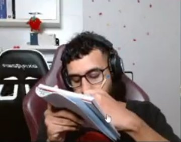
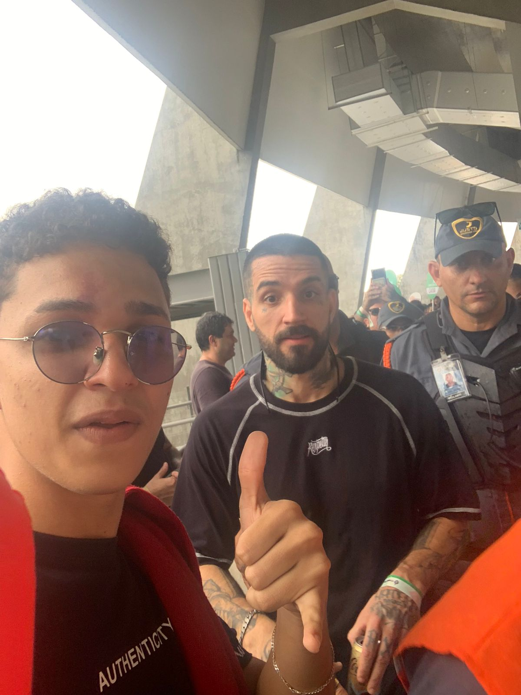
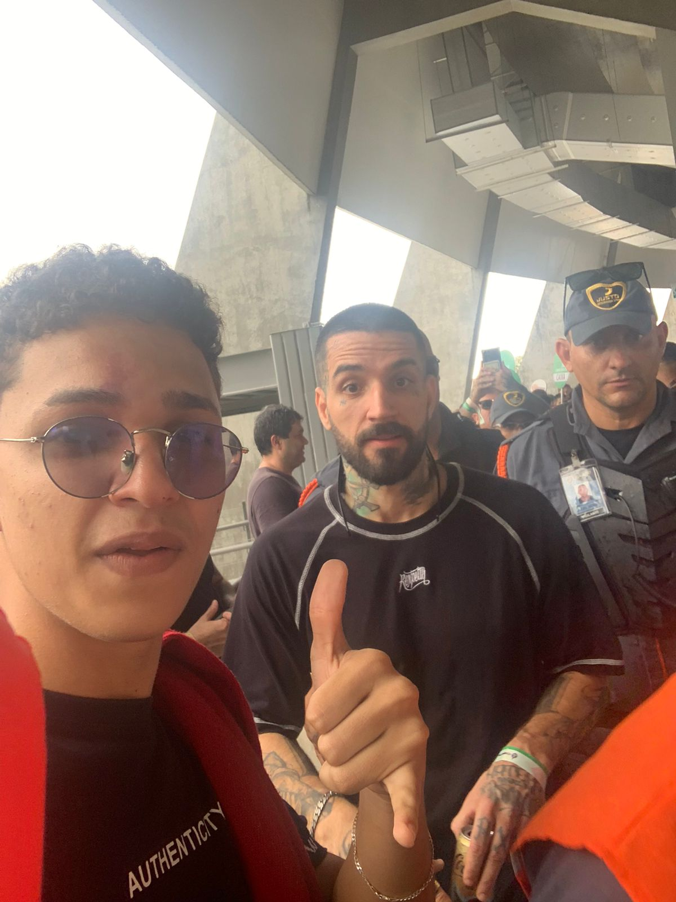

Bom Netinho Gaming
Conheça mais sobre o time da galera
Os Jogadores Abençoados
Fale bem ou fale mal, mas fale de nós. Bom Netinho Gaming é uma equipe de league of legends recém atualizada, cujo jogadores tem potencial de jogar em múltiplas lanes, isso faz com que o quesito " bans " seja algo que bote terror em qualquer adversário.
Estilo de jogo
Essa equipe é conhecida por não ter um único modo de jogar, diferente de equipes de patamares um pouco abaixo ( T1, LOUD, JDG). Bom Netinho Gaming normalmente joga para a rota do bot, no intuito de acumular o máximo de vantagem possível, já que se der 2 minutos e "87 É DO SPORT" não tiver recebido um gank, ele irá começar a pedir ff.
Entretanto, todos sabem que o verdadeiro estilo de jogo é voltado para a top lane, onde o melhor Carry do time ( Hugatão) atua. Estatísticas reais mostram que a winrate do time é de 76% quando o Jungler joga para o top, sobrepondo os 55% de winrate com o Jungler jogando para o bot.
Conheça os integrantes
.jpeg) 

Seguindo a ordem da esquerda pra direita temos: Hugatão, Davi Hadasso, O Thiago Laranja, 87 É DO SPORT, Gabs Gb